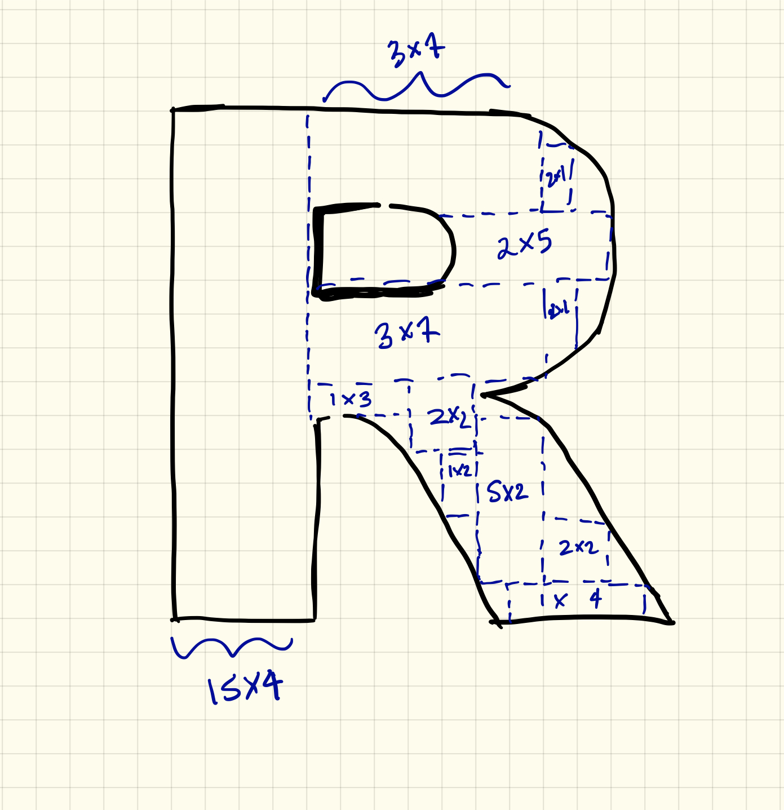

{kind=link}
dir <- dir("meetup-data", full.names = TRUE)
check_image <- function(pic) {
img <- jpeg::readJPEG(pic)
if (any(dim(img) == 3)) {
if (length(unique(img[,1,1])) == 1) {
file.remove(pic)
}
}
}
purrr::walk(dir, check_image)Last March Maëlle wrote a blog post “Faces of #rstats Twitter”, a great tutorial on scraping twitter photos and compiling them in a collage. This inspired a similar adventure, but for #RLadies!
 One of our early brainstorm ideas, as Maëlle pointed out, looks a bit more like a kniting pattern.
We brainstormed different ways we could make this collage unique, but ultimilately landed on creating a mosaic with the R-Ladies logo.
We first wanted to use Twitter profile pics but even after launching a small campaign we realized we’d identify too few R-Ladies to fill a collage. Therefore we mixed two information sources:
- For the collage itself we decided on using Meetup data, which was made even cooler by the fact that the
meetuprpackage was developed by R-Ladies in the R-Ladies Github organization!
- For the frame of the collage we chose to use the R-Ladies identified via Twitter.
library("dplyr")
## devtools::install_github("rladies/meetupr")
library("meetupr")
library("magick")
library("rtweet")Pull in Meetup data
To get all of our current Meetups, we scrape our R-Ladies GitHub data.
doc.raw <- RCurl::getURL("https://raw.githubusercontent.com/rladies/starter-kit/master/Current-Chapters.md")
meetups <- stringr::str_match_all(doc.raw, "www.meetup.com/(.*?)/")[[1]][,2]
meetups <- unique(meetups)We use our meetupr package to pull profile pictures of all of our members.
If you would like to follow along, you can grab a Meetup API Key.
api_key <- "YOUR_MEETUP_API_KEY"Here are a few small functions to get and save the Meetup photos.
get_photos <- function(i,meetup){
members <- try(get_members(meetup[i], api_key), silent = TRUE)
if(class(members)[1] != "try-error"){
members %>%
purrr::map(.,"photo", .null = NA) %>%
purrr::map_chr(., "photo_link", .null = NA)
}
}
save_image <- function(photo){
image <- try(image_read(photo), silent = TRUE)
if(class(image)[1] != "try-error"){
image <- image %>%
image_scale("100x100!") %>%
image_write(
paste0(
"meetup-data/",
stringr::str_match(photo[1], "member_(.*?)\\.")[, 2],
".jpg"
),
format = "jpeg"
)
}
}Grab the photos for each Meetup group.
pics <- purrr::map(1:length(meetups),
get_photos,
meetup = meetups
) %>%
unlist()Now walk it out 💃.
purrr::walk(pics, save_image)Remove the default avatars
There are a few photos that are the default avatar. These have a grey color with a white center. To check if this is the case, test whether the first column of pixels is fully grey.
This removed ~200 photos.
Make into a mosaic!
We use RsimMosaic, but had to tweak a few things (there were a few pictures causing errors making the whole thing break, so I added some error catching as well as the abilitity to specify the input tile size).
## devtools::install_github("LucyMcGowan/RsimMosaic")
library("RsimMosaicLDM")set.seed(108)
composeMosaicFromImageRandomOptim(
originalImageFileName = "RLadies_tofill.jpeg",
outputImageFileName = "art-ladies.jpg",
inputTileSize = 100,
imagesToUseInMosaic = "meetup-data",
removeTiles = TRUE,
fracLibSizeThreshold = 0.01
)We used 9106 unique tiles to create the image using K-nearest neighbors to select the optimal match.
Pull in the Twitter data
dat <- search_tweets(q = '#RLadies', n = 1000, include_rts = FALSE)
tweets <- users_data(dat) %>%
select(screen_name, profile_image_url)
users <- search_users("#RLadies", n = 1000) %>%
select(screen_name, profile_image_url)
prof <- unique(rbind(tweets, users))We removed a few accounts that we know are not actually (our version of) R-Ladies accounts.
prof <- prof[!(prof$screen_name %in%
c("Junior_RLadies",
"RLadies_LF",
"WomenRLadies",
"Rstn_RLadies13",
"RLadies",
"RnRladies")
), ]Here is a function to save the images. We are using the twitter images as the frame, so they are larger than the Meetup images.
save_image <- function(df){
image <- try(image_read(sub("_normal", "", df$profile_image_url)), silent = TRUE)
if(class(image)[1] != "try-error"){
image %>%
image_scale("500x500") %>%
image_write(paste0("tweet-data/", df$screen_name, ".jpg"), format = "jpeg")
}
}
users <- split(prof, 1:nrow(prof))
purrr::walk(users, save_image)Now let’s randomly read them in!
set.seed(525)
pics <- dir("tweet-data", full.names = TRUE)
pics <- sample(pics, length(pics))We removed a few of the chapter accounts to ensure an even number.
## we need a multiple of 4
rladies_chapters <- which(grepl("RLadies", pics))
pics <- pics[-rladies_chapters[1:2]]Create the frame
Create the top of the frame 🎉.
length_size <- length(pics)/4
pics[1:length_size] %>%
image_read() %>%
image_append(stack = FALSE) %>%
image_write("frame/top.jpg")Create the bottom of the frame 👇.
pics[(length_size + 1):(length_size * 2)] %>%
image_read() %>%
image_append(stack = FALSE) %>%
image_write("frame/bottom.jpg")Create the left side of the frame 👈.
pics[(length_size * 2 + 1):(length_size * 3)] %>%
image_read() %>%
image_append(stack = TRUE) %>%
image_write("frame/left.jpg")Create the right side of the frame 👉.
pics[(length_size * 3 + 1):length(pics)] %>%
image_read() %>%
image_append(stack = TRUE) %>%
image_write("frame/right.jpg")We add small R-Ladies logos to the sides of the frame!
logo_url <- "https://raw.githubusercontent.com/rladies/starter-kit/master/logo/R-LadiesGlobal_RBG_online_LogoOnly.png"
image_read(logo_url) %>%
image_scale("500x500+0+0") %>%
image_write("frame/logo_small.jpg")
ht <- image_read("art-ladies.jpg") %>%
image_info %>%
select(height)
dims <- paste0(ht, "x", ht, "+0+0")Put it all together! 🎨
c("frame/bottom.jpg") %>%
image_read() %>%
image_append(stack = FALSE) %>%
image_scale(geometry = dims) %>%
image_write("frame/good_bottom.jpg")
c("frame/top.jpg") %>%
image_read() %>%
image_append(stack = FALSE) %>%
image_scale(geometry = dims) %>%
image_write("frame/good_top.jpg")
c("frame/good_top.jpg", "art-ladies.jpg",
"frame/good_bottom.jpg") %>%
image_read() %>%
image_append(stack = TRUE) %>%
image_write("test_topbottom.jpg")
ht <- image_read("test_topbottom.jpg") %>%
image_info %>%
select(height)
dims <- paste0(ht, "x", ht, "+0+0")
c("frame/logo_small.jpg",
"frame/left.jpg",
"frame/logo_small.jpg") %>%
image_read() %>%
image_append(stack = TRUE) %>%
image_scale(geometry = dims) %>%
image_write("frame/good_left.jpg")
c("frame/logo_small.jpg",
"frame/right.jpg",
"frame/logo_small.jpg") %>%
image_read() %>%
image_append(stack = TRUE) %>%
image_scale(geometry = dims) %>%
image_write("frame/good_right.jpg")
c("frame/good_left.jpg", "test_topbottom.jpg",
"frame/good_right.jpg") %>%
image_read() %>%
image_append(stack = FALSE) %>%
image_write("we-r-ladies.png") 
Attending JSM? Come see our work on display at the Data Art Show! And since participating makes us real data artists now, find below the “artsy” description of our work!
R-Ladies is a global organization focused on improving gender diversity in the R community. R is an open-source statistics programming language. We used an R-Ladies developed package, meetupr to pull several thousand profile pictures from 33 R-Ladies meetups. We then used k-nearest neighbors to optimally match each image to a pixel of the R logo. The frame is comprised of Twitter profile pictures of individuals and local chapters who used the hashtag #RLadies in the days prior to our data collection. Pictures were assembled thanks to rOpenSci’s magick package. This work symbolizes how the global R-Ladies community is composed of diverse individuals attending events and communicating about the organization, whose strengths add up and create a strong grassroots organization. The whole creation process was carried out using R, showing the diversity of the language itself, and making the most of a tool, meetupr, created by members of the R-Ladies community, further underlining the synergy we want to convey. All in all, We R-Ladies is a tribute to diversity in the R community.